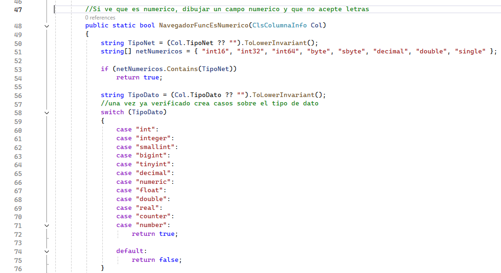

Los campos numéricos necesitan un tratamiento diferente de los campos de texto. El componente ya reconoce tipos enteros y decimales, aunque su conexión con el formulario dinámico todavía debe completarse.
¿Cómo reconoce un campo numérico?
NavegadorFuncEsNumerico revisa el tipo .NET y el tipo informado por la base de datos. Reconoce enteros, decimales, flotantes y otros tipos equivalentes.
Ubicación de la detección de campos numéricos
Capa Vista → Utilidades → clase ClsTipoColumna

Estado actual: esta función todavía no es llamada por
ClsCrudFormulario. Los campos numéricos se crean como cuadros de texto normales, por lo que la restricción de letras aún está pendiente de integración.Llaves numéricas automáticas
Cuando una columna es autoincremental, el formulario muestra el texto “automático”, bloquea el campo y omite ese valor al guardar. La base de datos asigna el identificador del nuevo registro.
Ubicación del bloqueo de llaves
Capa Vista → Componente → clase ClsCrudFormulario

¿Cómo lo utilizará el usuario?
- Abrir el formulario con Ingresar o Modificar.
- Completar los campos numéricos respetando el tipo de la columna.
- No modificar los campos marcados como automáticos.
- Guardar y comprobar el resultado en la cuadrícula.
Ubicación del formulario generado
Vista en ejecución → formulario Form1 → tabla tblempleado